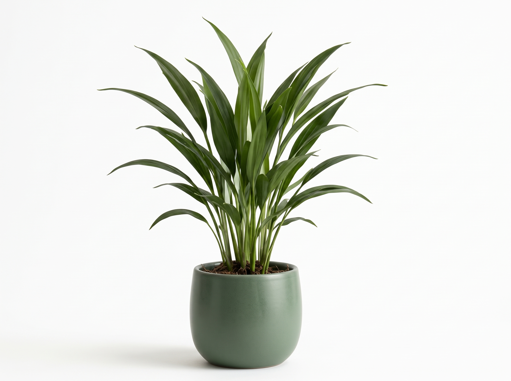

Çeşit Danışmanlığı
Toprağınıza ve iklime uygun çeşidi seçmenize yardımcı oluyoruz.
Turunçgil, zeytin, nar ve meyve fidanlarını sertifikalı olarak yetiştiriyor; çeşidi belli, sağlıklı fidanları uygun fiyatla sunuyoruz.
Kontrolsüz dikimden doğabilecek kayıpları önlemek için çeşidi belli, sağlıklı fidanlar yetiştiriyoruz.
Turunçgil ve meyve fidanlarımızın tamamı sertifikalı olarak yetiştirilir.
Aşı gözleri sağlıklı ve verimli ağaçlardan özenle seçilir.

Turunç tohumları hastalık riskini azaltmak için çeşitli işlemlerden geçirilir.
Önceliğimiz müşteri memnuniyeti; çiftçiye ve yeni başlayana aynı özen.
Sağ Fidancılık olarak turunçgil ve diğer meyve fidanlarını sertifikalı şekilde yetiştiriyor, uygun fiyatla satışa sunuyoruz.
Amacımız; çiftçilere ve bu işe yeni başlayan girişimcilere kaliteli, sağlıklı ve çeşidi belli fidanlar ulaştırarak kontrolsüz dikimden doğabilecek kayıp ve zararların önüne geçmek.
Bunun için aşı gözlerini sağlıklı ve verimli ağaçlardan seçiyor, turunç tohumlarını hastalık riskine karşı çeşitli işlemlerden geçiriyoruz. Öncelikli amacımız her zaman müşteri memnuniyeti.
Bize UlaşınHangi çeşidin toprağınıza ve iklime uygun olduğundan emin değilseniz bizi arayın. Bahçe kuracaklar için toplu sipariş teklifi de hazırlıyoruz.
Hemen ArayınToprağınıza ve iklime uygun çeşidi seçmenize yardımcı oluyoruz.
Yeni bahçe kuracaklara toplu fidan teklifi hazırlıyoruz.
Fidan çeşitleri, stok ve fiyat bilgisi için bizi arayın; size uygun çeşidi birlikte seçelim.